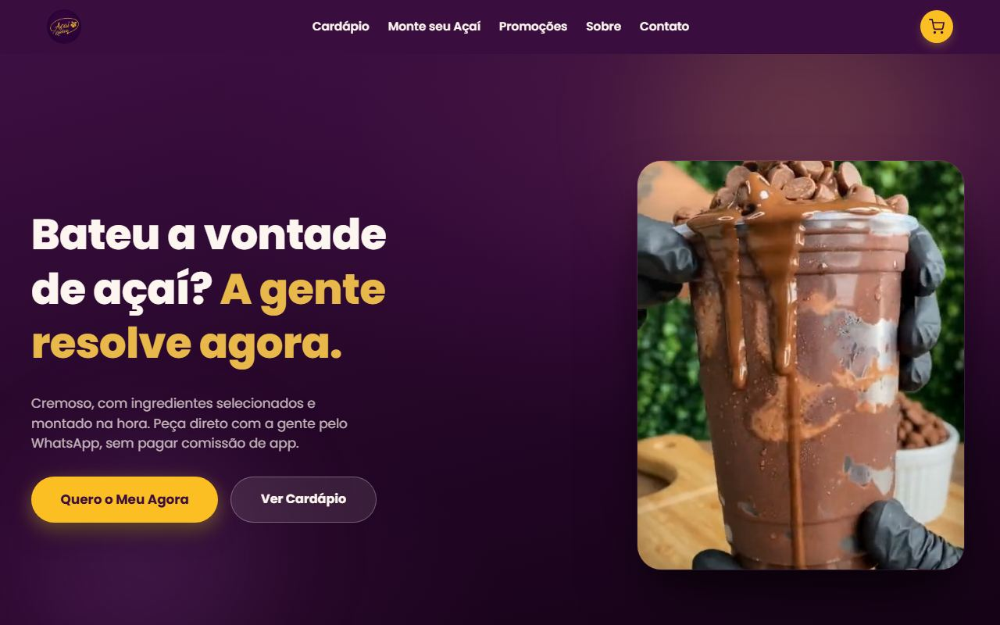
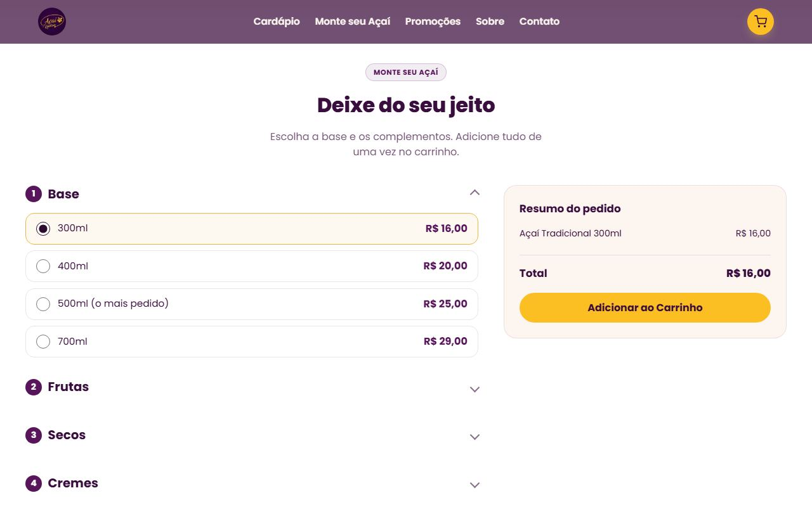

Projeto entregue, no ar
Açaí Ki Delícia Perus
Não é site de vitrine, é sistema de pedido. O cliente monta o açaí passo a passo com o preço atualizando na tela, fecha no carrinho e o pedido cai pronto no WhatsApp da loja. Construído, publicado em domínio próprio e pronto pra operar.
HTMLCSSJavaScript
- Montador de açaí passo a passo, com preço recalculando a cada escolha
- Cardápio por categoria: açaís, milkshakes, combos, vitaminas, potes, marmitas e bebidas
- Carrinho com edição de item antes de fechar
- Checkout com Pix, dinheiro ou cartão
- Pedido formatado caindo no WhatsApp da loja
- Domínio próprio, não é página dentro de aplicativo de terceiro